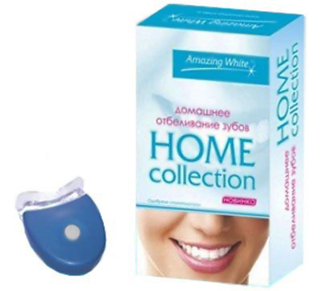
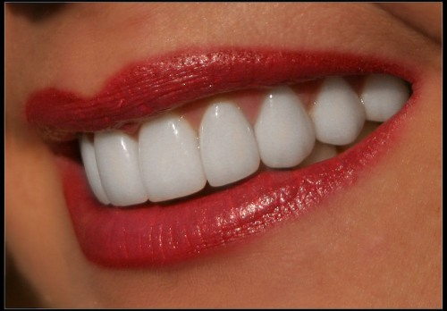

Домашнее отбеливание зубов
Для домашнего отбеливания зубов применяют низкоконцентрированные препараты перекиси водорода или карбамида (что есть более щадящий метод для тканей зубов). Это самостоятельное использование пациентом отбеливающих препаратов под контролем врача.
Схема применения:
В клинике (врач)
- Проводит профессиональную гигиену полости рта за неделю до лечения.
- Определяет исходный цвет зубов.
- Снимает рабочие слепки альгинатной массой с обеих челюстей. Изготавливает индивидуальные каппы.
- Определяет цвет зубов после домашнего отбеливания.
Дома (пациент)
- Обязан месяц перед проведением отбеливания чистить зубы зубными пастами, содержащими кальций и гидроксиапатит.
- Наполняет каппы препаратом (по капле геля в отпечаток каждого зуба в каппе).
- Носит каппы в том режиме, в котором определил врач.
- Каждая процедуру отбеливания начинает и завершает чисткой зубов пастами, содержащими кальций и гидроксиапатит.
- Отказывается от курения и употребления красящих продуктов в течение 2 недель после курса отбеливания.
.jpg "Каппа для отбеливания")
При домашнем отбеливании возможны неприятные ощущения. Вызывающие их причины и советы по устранению таковых следующие:
- в случае раздражения десен проверяют качество прилегания капп;
- при раздражении мягких тканей, как правило, говорят о том, что пациент использует избыточное количество материала;
- изменение вкусовых ощущений проходит самостоятельно через несколько часов.
Рекомендации после отбеливания: использовать зубные пасты содержащие кальций и фосфаты.
Преимущества домашнего отбеливания:
- контроль врача без длительного приема;
- рентабельность;
- небольшая стоимость;
- безболезненность;
- эффективность;
- безопасность.
Недостатки:
- необходимы сознательность;
- ответственность пациента;
- мотивация на длительное время;
- продолжительность лечения;
- рудность с переносимостью каппы.
Домашнее отбеливание успешно в 90% случаев. Цвет сохраняется до 3 лет.
Фортуна Валерия Сергеевна, врач-стоматолог
Рекомендуемые записи:
Отбеливающие полоскиЧитать Отбеливание зубовЧитать Профессиональное отбеливаниеЧитатьРекомендуемое видео:
Как бороться с кариесом
Косметическая стоматология